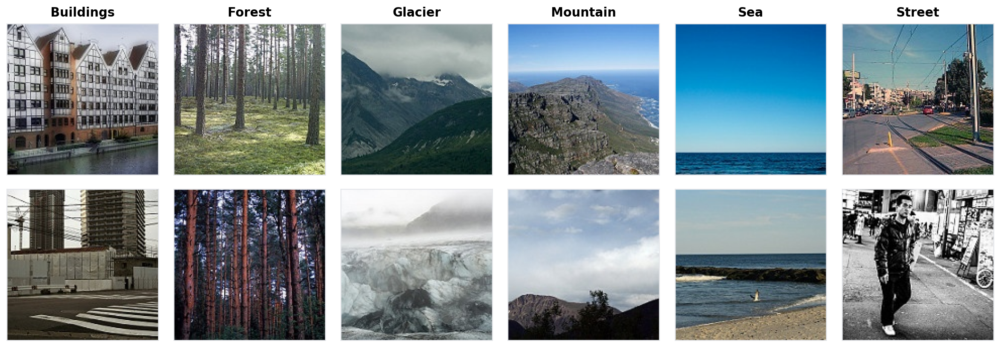
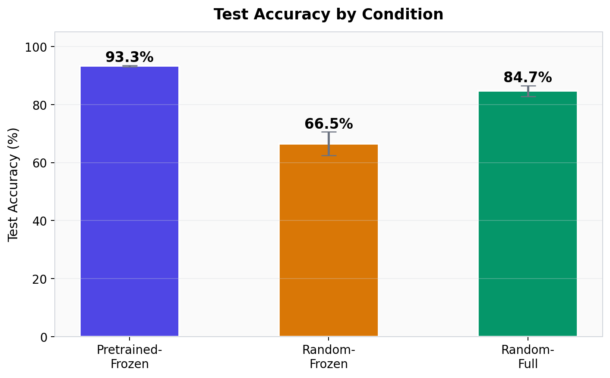
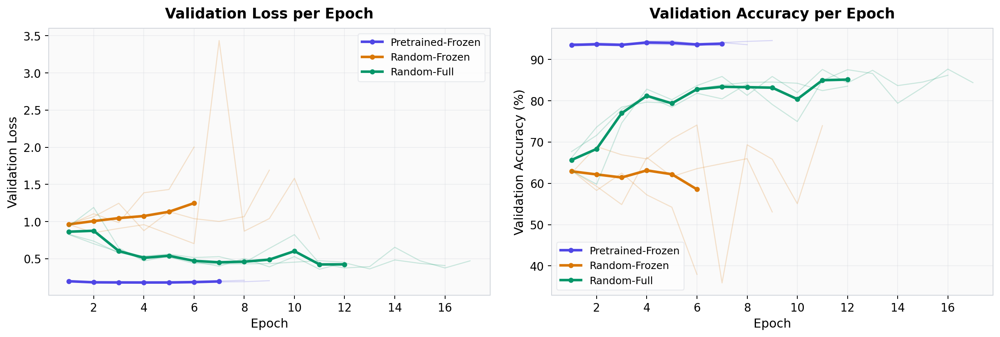
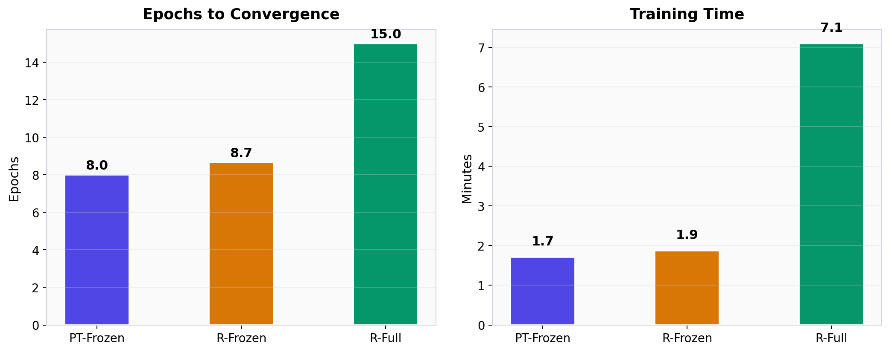
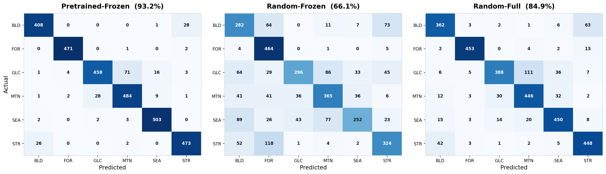
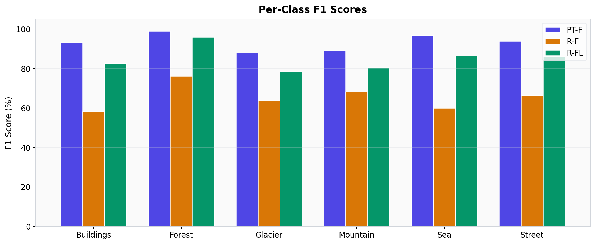

A Capacity-Matched Empirical Study Using ResNet-18
Shrirag Trolihal Santhosh
Northeastern University · Khoury College of Computer Sciences
Summer 2026
Transfer learning consistently outperforms training from scratch. But why?
Standard comparisons confound two distinct factors:
We design a three-condition experiment that isolates each factor independently.
ImageNet weights · Early layers frozen · Only layer4 + fc trained
Random weights · Early layers frozen · Same capacity as PT-F
Random weights · All layers trainable · Full-scratch baseline
Buildings · Forest · Glacier · Mountain · Sea · Street

BN Handling: All Batch Normalization layers in θf are locked in eval() mode during training. This prevents running statistics from drifting when weights are frozen.
| Comparison | Controls for | Isolates |
|---|---|---|
| PT-F vs R-F | Same trainable capacity | Feature quality |
| R-F vs R-FL | Same initialization | Model capacity |
| PT-F vs R-FL | — | Overall transfer vs scratch |
| Optimizer | SGD |
| Learning Rate | 1 × 10⁻³ |
| Momentum | 0.9 |
| Weight Decay | 1 × 10⁻⁴ |
| Batch Size | 32 |
| Early Stopping | Patience = 5 (val loss) |
| Seeds | 42, 100, 2026 |
| Hardware | NVIDIA RTX 4060 |


PT-F: Starts high, converges in ~3 epochs. Minimal seed variance.
R-F: Stagnates — random frozen features create an information bottleneck.
R-FL: Steady climb over 12+ epochs. Reaches ~85% but needs 2× time.

| Condition | Epochs | Time | Best Val Acc |
|---|---|---|---|
| PT-F | 8.0 | 1.7 min | 93.8% |
| R-F | 8.7 | 1.9 min | 67.8% |
| R-FL | 15.0 | 7.1 min | 86.3% |
Transfer learning achieves higher accuracy in 4× less time than training from scratch.

Primary confusions: Glacier ↔ Mountain and Buildings ↔ Street across all conditions.
Pretraining effect: PT-F dramatically reduces off-diagonal errors even for visually similar classes.

PT-F vs R-F (same capacity)
Pretrained features provide rich, transferable representations. Random frozen features are noise-like.
R-F vs R-FL (same init)
Unlocking all parameters helps, but takes 2× longer and still falls 8.6% short of PT-F.
PT-F vs R-FL
Pretrained features > more trainable parameters, especially under limited data and compute.
Conclusion: The performance gap is driven primarily by feature quality, not model capacity. Our capacity-matched control (R-F) proves this rigorously.
Pretrained feature quality — not model capacity — is the primary driver of transfer learning's superiority in scene classification under limited data.
Thank you
Shrirag Trolihal Santhosh · Northeastern University